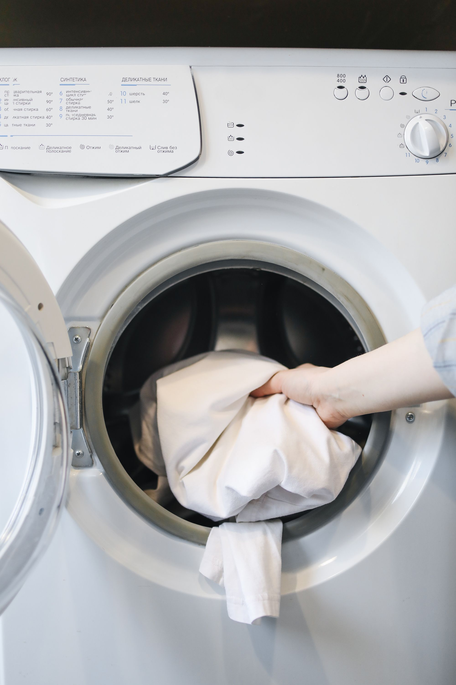

Vos decidís
Aceptás o rechazás cada pedido. No hay penalización por no tomar uno.
Para personas con lavadora y secadora
ServiYa te conecta con clientes que necesitan lavandería en tu zona. Vos elegís qué pedidos aceptar — sin turnos fijos, sin exclusividad.

Beneficios
Aceptás o rechazás cada pedido. No hay penalización por no tomar uno.
No hay horario obligatorio ni exclusividad — podés trabajar con otras plataformas también.
Recibís el 70% del subtotal antes de impuestos de cada pedido completado.
Aplicar a ServiYa no tiene ningún costo.
Requisitos
No se requiere vehículo propio.
Cómo aplicar
Contanos sobre vos
Un formulario corto, de unos minutos.
Coordinamos por WhatsApp
Si tu perfil encaja, seguimos con identificación, fotos de tu equipo y datos de pago.
Preguntas frecuentes
No. Vos elegís cuáles aceptar según tu disponibilidad. No hay ninguna penalización por no tomar uno.
No. Los pedidos se avisan por un grupo de WhatsApp de ServiSocios y los tomás si te conviene, cuando querés.
Recibís el 70% del subtotal antes de impuestos de cada pedido completado, transferido por SINPE Móvil apenas se completa el pedido.
No es obligatorio.
No. El cliente le paga a ServiYa, y nosotros te transferimos tu parte. Así evitamos confusiones para ambos lados.
Avisanos apenas lo sepas para buscar una alternativa. Casos justificados (enfermedad, accidente, problemas con el equipo) no tienen penalización.